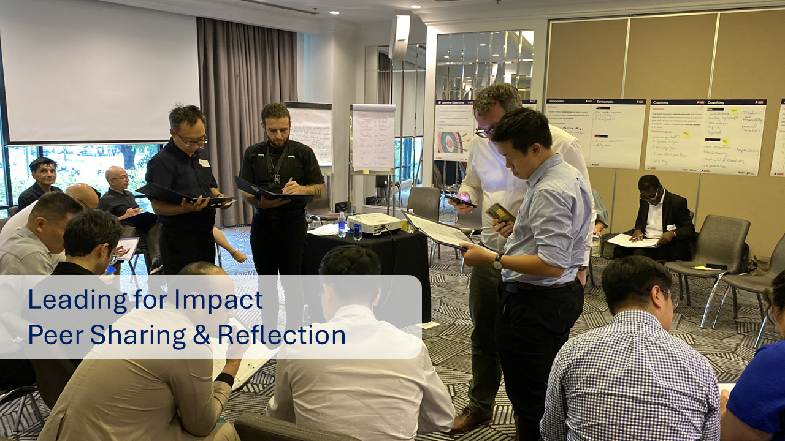
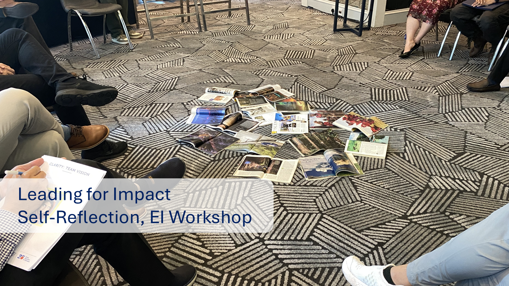
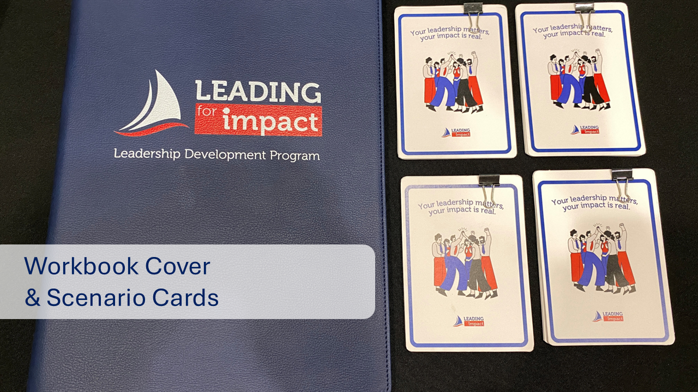
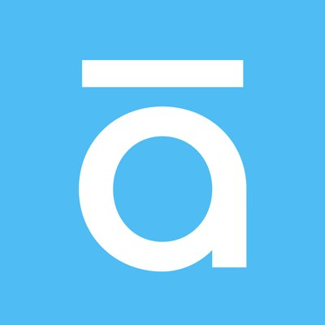

I design and deliver learning programmes for organisations. Tôi thiết kế và triển khai các chương trình học cho các tổ chức.
I'm Thanh. I partner with leaders to figure out what's needed, build the programmes, and deliver them myself. I've done this across manufacturing (Samsung Display), E-commerce (Shopee), multi-business groups (Dai Viet Group), and higher education (RMIT Vietnam).
Tôi là Thành. Tôi làm việc cùng lãnh đạo để xác định nhu cầu đào tạo, từ đó thiết kế và trực tiếp triển khai các chương trình đào tạo. Kinh nghiệm của tôi trải rộng trong các lĩnh vực sản xuất (Samsung Display), E-commerce (Shopee), tập đoàn đa ngành (Đại Việt Group), và giáo dục (RMIT Vietnam).

How I Work Cách tôi làm việc
I care more about what happens after the training than during it.
That means I ask a lot of questions before I design anything. I get into the room with the people who'll be learning — not just their managers. I build things that fit the real situation, not the ideal one.
When the budget is tight, we find a way. When I need the right person to teach something, we find them too — sometimes that's the CFO, sometimes it's a volunteer. I work closely with whoever is involved and we figure it out together.
People tell me they feel safe in my sessions. I think that's just what happens when the person facilitating actually gives a damn.
Tôi quan tâm đến chuyện gì xảy ra sau buổi học hơn là trong lúc học.
Nên trước khi thiết kế bất cứ thứ gì, tôi hỏi rất nhiều. Tôi trò chuyện với những người sẽ trực tiếp học — không chỉ với quản lý của họ. Tôi muốn hiểu chuyện gì đang thực sự xảy ra, và làm thế nào có thể giúp họ.
Ngân sách ít? Tôi sẽ tìm cách. Cần người phù hợp để dạy một chủ đề? Tôi đi tìm — đôi khi là CFO, đôi khi là tình nguyện viên. Tôi làm việc sát với những ai liên quan và chúng tôi cùng nhau tìm cách.
Mọi người thường cởi mở trong các buổi của tôi, có lẽ vì tôi luôn quan tâm tới việc tạo môi trường an toàn để cùng học và chia sẻ.
Selected Projects Dự án tiêu biểu
ProblemVấn đề
- RMIT Vietnam had no leadership development programme for academic programme managers
- These managers handled both academic and people responsibilities but had no structured support for the leadership side
- RMIT Vietnam chưa có chương trình phát triển lãnh đạo cho các quản lý chương trình học thuật
- Những quản lý này vừa phụ trách chuyên môn vừa quản lý con người nhưng chưa được hỗ trợ bài bản về kỹ năng lãnh đạo
What I didTôi đã làm gì
- Worked with senior leaders to identify key gaps in leadership capability
- Designed hybrid programme combining in-person workshops with digital follow-up tools
- Built reflection journals in Padlet to enable peer learning and ongoing development
- Focused on practical tools (coaching conversations, feedback frameworks) rather than theory
- Làm việc với lãnh đạo cấp cao để xác định những thiếu hụt chính về năng lực lãnh đạo
- Thiết kế chương trình kết hợp workshop trực tiếp với công cụ theo dõi trực tuyến
- Xây dựng nhật ký phản tư trên Padlet để học hỏi đồng nghiệp và phát triển liên tục
- Tập trung vào công cụ thực tế (coaching, khung phản hồi) thay vì chỉ lý thuyết
ResultKết quả
- 80 managers participated in cohort 1 with strong engagement
- Most common feedback: "safe practice space" and "realistic scenarios"
- Deans from all 3 schools nominated additional participants and requested more slots
- Cohort 2 expanded to 4th school; programme adopted as annual leadership initiative
- 80 quản lý tham gia cohort 1 với mức độ tương tác cao
- Phản hồi phổ biến nhất: "không gian thực hành an toàn" và "tình huống sát thực tế"
- Deans từ cả 3 trường đề cử thêm người tham gia và yêu cầu thêm slots
- Cohort 2 mở rộng sang trường thứ 4; chương trình trở thành sáng kiến lãnh đạo thường niên
"The program has been a transformative journey, one that helped me rediscover parts of myself I hadn’t paused to notice. It deepened my understanding of the role middle managers play at RMIT, not just as doers, but as connectors and culture-shapers. Through meaningful conversations and shared reflections, I felt truly seen, heard, and valued. I gained new perspectives on leadership and myself and what it means to lead with clarity, compassion, and courage. Most importantly, program gifted me a chance to join a community of wonderful people to cherish. I’m deeply grateful to those who made this experience possible. What we built together goes far beyond a course—it is a fellowship of purpose, growth, and shared impact. I sincerely hope this program continues to grow and prosper, inspiring and empowering many more leaders in the years to come." Participant - Cohort #1



ProblemVấn đề
- Shopee Express building largest sorting centre amid high rider turnover
- Hub managers leading teams through constant operational changes
- No framework or tools available for managing change effectively
- Shopee Express đang xây trung tâm phân loại lớn nhất trong khi tỷ lệ nghỉ việc cao
- Quản lý hub dẫn dắt đội ngũ qua những thay đổi vận hành liên tục
- Chưa có khung làm việc hay công cụ nào để quản lý thay đổi hiệu quả
What I didTôi đã làm gì
- Worked with Regional Operations Manager and HRBP to understand ground-level challenges
- Created simulation game for experiential learning (later adopted across multiple business entities)
- Built real case studies with Ops Manager based on actual hub situations
- Delivered practical change management framework teams could apply immediately
- Làm việc với Quản lý Vận hành khu vực và HRBP để hiểu thách thức thực tế
- Tạo trò chơi mô phỏng cho học tập trải nghiệm (sau đó được áp dụng cho nhiều đơn vị)
- Xây dựng case study thực tế với Quản lý Vận hành dựa trên tình huống hub thật
- Cung cấp khung quản lý thay đổi mà đội ngũ có thể áp dụng ngay lập tức
ResultKết quả
- 4.8/5 rating on "can apply back to work"
- Most common feedback: participants wanted more sessions
- Simulation game adopted for workshops across food delivery and business development teams
- Đánh giá 4.8/5 cho mục "có thể áp dụng vào công việc"
- Phản hồi phổ biến nhất: học viên muốn thêm buổi
- Trò chơi mô phỏng được áp dụng cho workshop ở giao đồ ăn và phát triển kinh doanh
Designed and facilitated leadership workshops across 4 entities — logistics, business development, food delivery — each customised to the team's specific challenges.
Thiết kế và điều phối workshop lãnh đạo cho 4 đơn vị — logistics, phát triển kinh doanh, giao đồ ăn — mỗi chương trình được tuỳ chỉnh theo thách thức riêng của từng đội.
"Real-life examples, engaging facilitation, clear delivery"— Participant feedback


ProblemVấn đề
- Multi-business group (international projects, cloud kitchens, automotive, hospitality) with managers rotating between units
- After 15 years, no structured leadership development programme existed
- Leaders managing remote teams, cross-unit projects, rapid expansion without formal support
- Severely limited budget post-COVID
- Tập đoàn đa ngành (dự án quốc tế, cloud kitchen, ô tô, khách sạn) với quản lý luân chuyển giữa các đơn vị
- Sau 15 năm, chưa có chương trình phát triển lãnh đạo bài bản
- Lãnh đạo quản lý đội từ xa, dự án liên đơn vị, mở rộng nhanh mà không có hỗ trợ chính thức
- Ngân sách rất hạn chế sau COVID
What I didTôi đã làm gì
- Worked with CEO, CFO, HR Director to design 12-month learning roadmap covering communication, financial and business acumen
- Combined workshops, reading system (34 articles, 20 books), and case competition with real budget measured by actual revenue
- Invited CEO and CFO to teach using real company case studies; built gamification platform to track participation
- Ran 52 knowledge-sharing sessions in parallel with internal SMEs across IT, Marketing, Finance, Legal, Sales, Design
- Làm việc với CEO, CFO, Giám đốc Nhân sự thiết kế lộ trình 12 tháng về giao tiếp, tài chính và kinh doanh
- Kết hợp workshop, hệ thống đọc (34 bài, 20 sách), cuộc thi với ngân sách thật đo bằng doanh thu
- Mời CEO và CFO dạy bằng case study công ty; xây platform gamification theo dõi tham gia
- Chạy song song 52 buổi chia sẻ kiến thức với chuyên gia nội bộ từ IT, Marketing, Tài chính, Pháp lý, Kinh doanh, Thiết kế
ResultKết quả
- 60 managers across 2 programmes: LDP (senior managers) and LDP+ (team leads, supervisors)
- Delivered 14 learning sessions, 4 follow-ups, 1 case competition with real budget targets, 47 book loans
- Programme costs kept to 20% of original vendor quote through negotiation and internal resources
- Renewed for 2022 with expanded scope based on manager feedback
- 60 quản lý tham gia 2 chương trình: LDP (quản lý cấp cao) và LDP+ (trưởng nhóm, giám sát)
- Triển khai 14 buổi học, 4 follow-up, 1 cuộc thi với ngân sách thật, 47 lượt mượn sách
- Chi phí chương trình giữ ở 20% so với báo giá vendor nhờ thương lượng và nguồn lực nội bộ
- Được mở tiếp năm 2022 với phạm vi mở rộng dựa trên phản hồi quản lý
"[Để chỗ cho bạn thêm quote từ học viên]" — [Tên học viên, Vị trí]


ProblemVấn đề
- High school teachers in Hanoi and Ho Chi Minh City were hearing a lot about AI but had no structured way to understand or apply it in the classroom
- Most available AI training was either too technical or too generic — not grounded in actual teaching practice
- Schools needed something practical they could act on immediately, not a theoretical overview
- Giáo viên THPT ở Hà Nội và TP.HCM nghe nhiều về AI nhưng chưa có con đường rõ ràng để hiểu và ứng dụng vào lớp học
- Hầu hết các khoá đào tạo AI hiện có quá kỹ thuật hoặc quá chung chung — không gắn với thực tiễn giảng dạy
- Các trường cần một chương trình thực tế có thể áp dụng ngay, không chỉ là lý thuyết tổng quan
What I didTôi đã làm gì
- Designed and delivered a full-day AI for Teaching workshop tailored to secondary school educators across 3 schools
- Built all content from scratch — no vendor materials — grounded in real classroom scenarios teachers could relate to
- Covered prompt writing, AI-assisted lesson planning, assessment design, and ethical use with students
- Used hands-on practice throughout: teachers left with AI-generated materials they actually made during the session
- Thiết kế và triển khai workshop AI cho Giảng dạy một ngày, tuỳ chỉnh cho giáo viên THPT tại 3 trường
- Xây dựng toàn bộ nội dung từ đầu — không dùng tài liệu vendor — bám sát tình huống thực tế trong lớp học
- Bao gồm viết prompt, lập kế hoạch bài học với AI, thiết kế kiểm tra, và sử dụng AI có trách nhiệm với học sinh
- Thực hành xuyên suốt: giáo viên rời buổi học với tài liệu do AI hỗ trợ mà chính họ tạo ra trong buổi học
ResultKết quả
- 200+ teachers trained across 3 schools in Hanoi and Ho Chi Minh City
- 9.3/10 post-training feedback score; 90%+ rated "extremely satisfied"
- Most common feedback: relevant to real work, easy to apply right away
- Multiple schools requested follow-up sessions after the initial workshop
- 200+ giáo viên được đào tạo tại 3 trường ở Hà Nội và TP.HCM
- Điểm phản hồi sau đào tạo 9.3/10; 90%+ đánh giá "rất hài lòng"
- Phản hồi phổ biến nhất: sát thực tế, dễ áp dụng ngay
- Nhiều trường yêu cầu thêm buổi sau chương trình đầu tiên


What People Say Nhận xét từ đồng nghiệp
"When I hired Thanh, I couldn't have imagined what he was capable of. When AI came up, he instantly started experimenting with it, leading to many workshops for staff members about how to integrate AI in their work processes, which resulted in many saved working hours across the organisation. Any organization would be lucky to have him until we can clone him."
"Thank you so much for the engaging online workshop [6 thinking hats] yesterday. Our team really enjoyed the online and offline chats and laughs. The Industry team applied the 6 thinking hats in a meeting this morning about a decision to go ahead with a project."
"He never gives up even when the budget is Zero, he always thinks and finds out solutions for any issue."
Experience Kinh nghiệm

L&D Specialist | RMIT Vietnam
2023 – presentnay
- Grew staff learning hours from 7,000+ to 11,000+ per year through a series of new initiatives
- Designed and launched the first leadership development programme for academic managers (80 participants across 2 cohorts)
- Designed the first AI productivity workshops and cross-department lunch & learn series (170+ staff)
- Facilitate sessions on AI, debate, and critical thinking — not just coordinate them
- Tăng số giờ học tập của nhân viên từ 7,000+ lên 11,000+/năm qua hàng loạt sáng kiến mới
- Thiết kế và triển khai chương trình phát triển lãnh đạo đầu tiên cho quản lý học thuật (80 người tham gia qua 2 cohort)
- Thiết kế workshop AI năng suất đầu tiên và chuỗi lunch & learn liên phòng ban (170+ nhân viên)
- Trực tiếp điều phối các buổi về AI, tranh biện và tư duy phản biện — không chỉ điều phối hành chính

L&D Partner | Shopee
2022 – 2023
- Partnered with business across 4 entities (1,600+ staff in Business Development alone)
- Designed and facilitated customised leadership workshops; each customised to the team's specific challenges
- Created a change management simulation game later adopted company-wide
- Đồng hành cùng doanh nghiệp ở 4 đơn vị (riêng Business Development hơn 1,600 nhân viên)
- Thiết kế và điều phối workshop lãnh đạo tuỳ chỉnh theo thách thức riêng của từng đội
- Tạo trò chơi mô phỏng quản lý thay đổi, sau đó được áp dụng toàn công ty

L&D Specialist | Dai Viet Group
2019 – 2022
- Built the company's first structured leadership programme from scratch, working directly with CEO, CFO, and CHRO
- Kept costs to a fraction of budget by negotiating fees, inviting pro bono experts, and using internal mentors, trainers
- Ran 52 internal knowledge-sharing sessions in one year with SMEs across IT, Marketing, Finance, Legal, Sales, Design
- Co-built a gamification platform tracking participation across workshops and book reviews
- Xây dựng chương trình phát triển lãnh đạo bài bản đầu tiên từ đầu, làm việc trực tiếp với CEO, CFO và CHRO
- Giữ chi phí ở mức tối thiểu bằng cách thương lượng phí, mời chuyên gia tình nguyện, tận dụng mentor và giảng viên nội bộ
- Tổ chức 52 buổi chia sẻ kiến thức nội bộ trong một năm với chuyên gia từ IT, Marketing, Tài chính, Pháp lý, Kinh doanh, Thiết kế
- Đồng xây dựng nền tảng gamification theo dõi hoạt động tham gia workshop và review sách

Senior Training Professional | Samsung Display Vietnam
2016 – 2019
- Managed training operations for 10,000+ employees across 3 shifts
- Led a 60-person change manager network
- Quản lý vận hành đào tạo cho 10,000+ nhân viên qua 3 ca làm việc
- Điều phối mạng lưới 60 đặc phái viên thay đổi
Freelance Trainer & MentorGiảng viên & Mentor tự do
2024 – presentnay
- Designed and delivered AI for Teaching workshops for 150+ high school teachers across 3 schools in Hanoi and Ho Chi Minh City(9.3/10 post-training feedback, 90%+ extremely satisfied)
- Built and facilitated 6 core skills courses for 200 students in Samsung Innovation Campus programme
- Mentored youth-led projects on green energy at Youth Under 30 and Nexus Vietnam
- Designed learning content, outline, and activities for a culture consulting company
- Thiết kế và triển khai workshop AI cho Giảng dạy cho 150+ giáo viên tại các trường cấp 3 ở Hà Nội và Thành phố Hồ Chí Minh (feedback 9.3/10, 90%+ rất hài lòng)
- Xây dựng và đào tạo 6 kỹ năng cốt lõi cho 200 sinh viên trong chương trình Samsung Innovation Campus
- Mentor các dự án năng lượng xanh do sinh viên dẫn dắt tại Youth Under 30 và Nexus Vietnam
- Thiết kế nội dung học tập, learning outline và hoạt động cho một công ty tư vấn văn hoá
Certifications Chứng chỉ

SHRM Certified Professional
View on Credly ↗
Korn Ferry Leadership Architect™ Certified Practitioner
View certificate ↗
Certified Practitioner — Team Psychological Safety
View certificate ↗Skills
Tools



Looking for someone to build your learning programmes? Bạn đang tìm L&D chuyên nghiệp?
I can help with:
Tôi có thể giúp bạn:
- Designing leadership development programmes
- Facilitating workshops (English and Vietnamese)
- Building learning strategies and systems for SMEs
- Setting up learning analytics and reporting
- Thiết kế chương trình Leadership Development
- Điều phối workshop (tiếng Anh và tiếng Việt)
- Xây dựng hệ thống học hiệu quả cho doanh nghiệp vừa và nhỏ
- Xây dựng hệ thống phân tích dữ liệu và báo cáo
If any of that sounds useful, I'd love to have a conversation.
Tôi sẵn lòng trao đổi thêm dựa trên nhu cầu của bạn.
Download my CV Tải CV của tôi